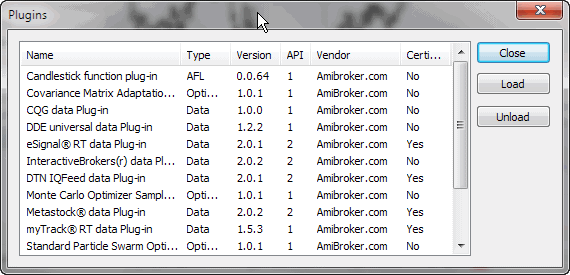

Plugins window lists all loaded plug-in DLLs. It is useful for inspecting which plug-ins are active.

In addition to just showing the list of plug-ins, you can unload all DLLs by pressing the "Unload" button and load them back by pressing the "Load" button. Please note that a DLL must be placed in the "Plugins" subfolder of the AmiBroker main directory to be seen.
At startup, AmiBroker scans the "Plugins" folder and loads the DLLs that follow the specifications of an AmiBroker plug-in. If a DLL is loaded, it is "locked" for writing, so it cannot be overwritten or modified.
During the development process, it is necessary to overwrite/modify the DLL code because when you apply changes to the source code, these changes must be recompiled and stored into a DLL file. To allow the developer to overwrite the DLL used by AmiBroker, the "Unload" function is available in this window. Unloading releases the DLL so it can be overwritten without the need to restart AmiBroker. Then, after modifying the DLL code, you can load the DLL back using the "Load" function.
IMPORTANT NOTE: AmiBroker makes no representations regarding the features and performance of non-certified third-party plug-ins. Specifically, certain plug-ins can cause instabilities or even crashes. The entire use of non-certified third-party plug-ins is at your own risk.